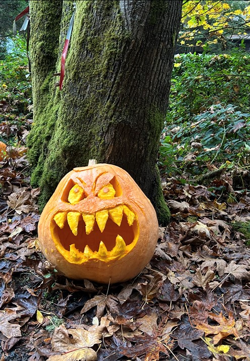

Murden Cove Pumpkin Patch
Every summer a pumpkin grows near Murden Cove. Every October it becomes a jack-o'-lantern. This page is a gallery of those annual creations.
Halloween 2026
Murden Cove Pumpkin Patch

🎃 Harvested • Carved • Halloween 2026